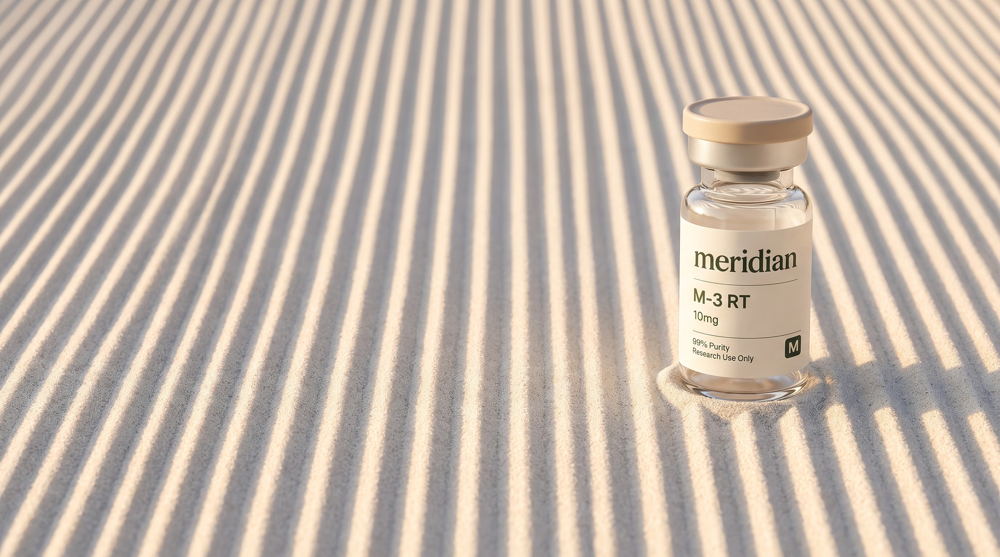

U.S.-made research materials
Research with
higher
standards.
Transparent, batch-specific laboratory documentation with every vial.
Shop research
View lab results
Drag to rake the sand
Smooth it over